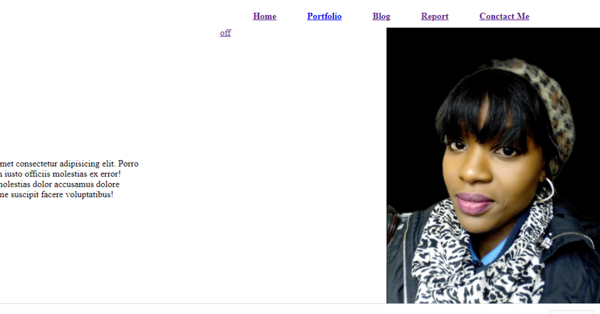

This report contains my learning experience of web development and the debugging process. First, it was a great experience to me because it my first time to make a website with CSS and HTML. What I found the most difficult it was to use padding and margin to layout the page. But in the other hand I find very easy to give colours to elements. It took more months to be able to create this website because I need to understand how the HTML and the CSS works. The most positive part of this experience was to see the outcome of the combination of these language on the website.
For my background color a choose black because is an easy color to associates with other color and the black colour give a professional touch to a layout. At the home page I present myself and a add my photo to populate the main of my page. I use white color for my text because I think It bring a good contrast with back background color. For the font part I add an animation from right to left for the photo and from left to right for the block presentation. I use @keyframe this animation allows those two element that I call photo and presentation to change from a style to another one with I found very interesting. @keyframes photo { 0% { left:500px; top:0px;} 100% { left:0px; top:0px;} } @keyframes presentation { 0% { left:-500px; top:100px;} 100% { left:0px; top:100px;}

For the profolio a create four classes to layout all the modules block I gave same height 200 pixel and same width 300 pixel to have a nice layout. I also use p element to defines paragraph which contain the module description and h2 for the heading
For the blog page I have create a main class inside I insert three classes I also insert aside block to layout my blog page then I add CSS property segment it.
the contact me page a create form to collect the user input for kept my background contact form in white so the user can see the form properly.